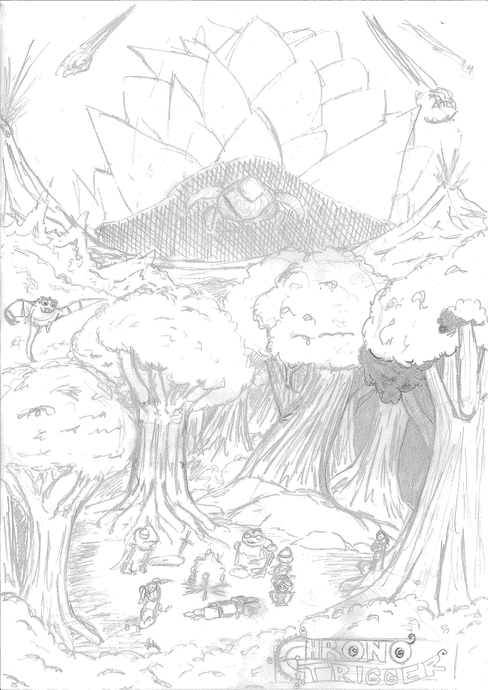
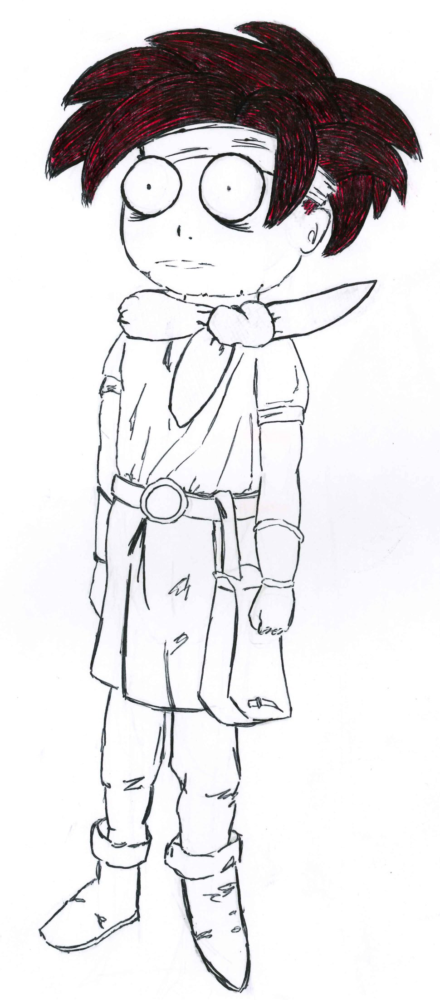
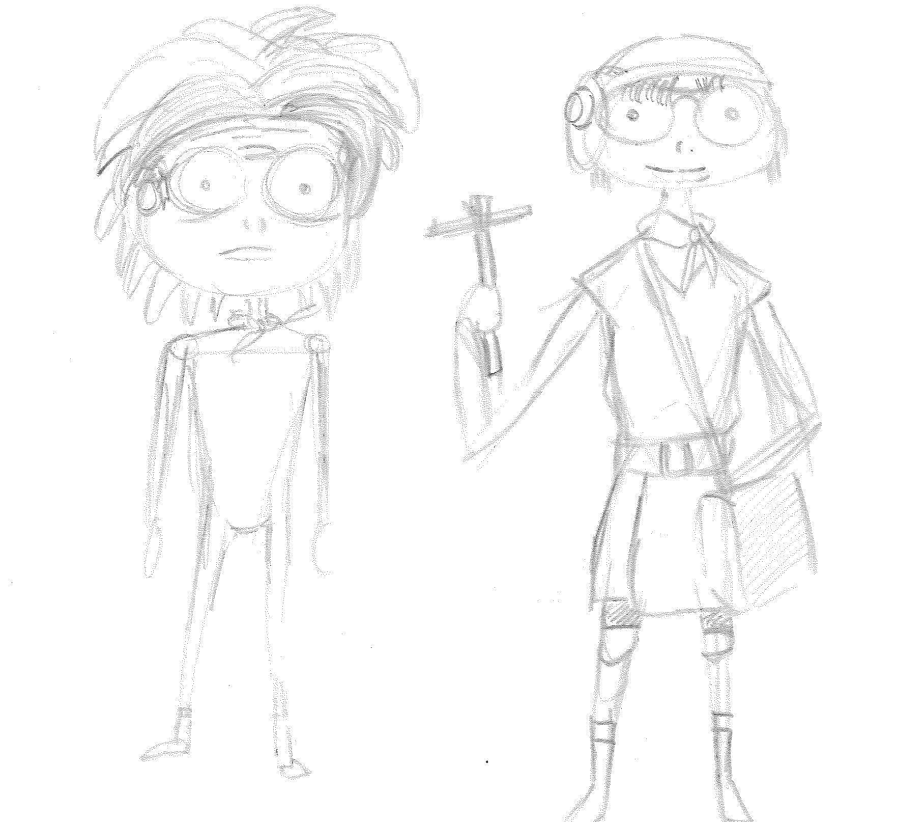

Pour ce projet de graphisme, nous devions réaliser une affiche
combinant deux univers différents. J’ai choisi les personnages
du jeu Chrono Trigger représentés dans le style de Tim Burton.
J’ai fait beaucoup de croquis pour déterminer à quoi ressemblerait
l’affiche finale. J’ai dessiné cette dernière sur papier, sauf le
fond que j’ai réalisé sur Photoshop.




